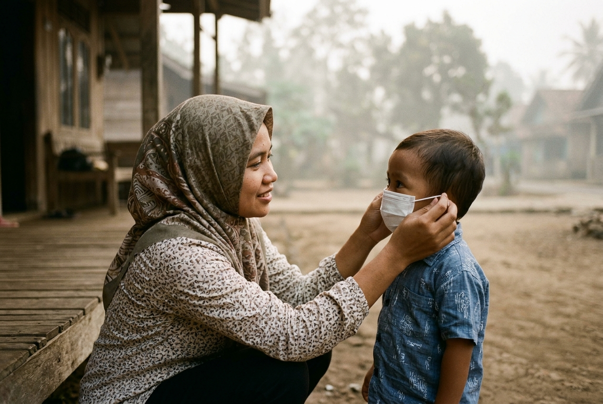

<!-- ========================================================
  WIDGET KAMPANYE DONASI & PROGRAM NYATA LAZ WANITA ISLAM
  3 Program Prioritas Berbasis Data & Riset (Susenas, Kemenkes, BAZNAS)
  100% Responsif & Siap Digunakan di Elementor
======================================================== -->

<link rel="stylesheet" href="https://cdnjs.cloudflare.com/ajax/libs/font-awesome/6.4.0/css/all.min.css">
<style>
  :root {
    --lilac-primary: #54366F;
    --lilac-dark: #3D2452;
    --lilac-light: #F6F1FA;
    --lilac-soft: #D9C9E8;
    --lilac-tint: #ECE5F3;
    --gold-accent: #C5A46D;
    --gold-gradient: linear-gradient(135deg, #ECC874 0%, #C59A3F 50%, #9E7422 100%);
    --gold-glow: 0 4px 15px rgba(197, 154, 63, 0.4);
    --gold-light: #FDF9F0;
    --text-dark: #22222B;
    --text-muted: #666675;
    --border-color: #E6E2ED;
    --font-heading: 'Plus Jakarta Sans', sans-serif;
    --font-body: 'Plus Jakarta Sans', sans-serif;
  }

  .lazwi-campaign-section {
    font-family: var(--font-body);
    color: var(--text-dark);
    background: #FFFFFF;
    padding: 70px 20px 80px 20px;
    box-sizing: border-box;
    width: 100%;
    margin: 0 auto;
  }

  .campaign-inner-container {
    max-width: 1200px;
    margin: 0 auto;
  }

  /* SECTION HEADER */
  .campaign-sec-header {
    text-align: center;
    max-width: 780px;
    margin: 0 auto 50px auto;
  }

  .campaign-sec-badge {
    display: inline-flex;
    align-items: center;
    gap: 8px;
    background: var(--lilac-light);
    color: var(--lilac-primary);
    font-size: 12px;
    font-weight: 700;
    padding: 6px 16px;
    border-radius: 20px;
    border: 1px solid var(--lilac-soft);
    margin-bottom: 12px;
    text-transform: uppercase;
    letter-spacing: 0.5px;
  }

  .campaign-sec-badge i {
    color: var(--gold-accent);
  }

  .campaign-sec-title {
    font-family: var(--font-heading);
    font-size: 34px;
    font-weight: 800;
    color: var(--lilac-dark);
    margin: 0 0 14px 0;
    line-height: 1.25;
  }

  .campaign-sec-title span {
    color: var(--gold-accent);
  }

  .campaign-sec-subtitle {
    font-size: 15px;
    color: var(--text-muted);
    line-height: 1.6;
    margin: 0;
  }

  /* LIST OF CAMPAIGNS (CARDS) */
  .campaigns-list {
    display: flex;
    flex-direction: column;
    gap: 50px;
  }

  .campaign-card-row {
    background: #FFFFFF;
    border: 1px solid var(--border-color);
    border-radius: 22px;
    overflow: hidden;
    display: flex;
    box-shadow: 0 8px 30px rgba(84, 54, 111, 0.05);
    transition: all 0.3s ease;
  }

  .campaign-card-row:hover {
    transform: translateY(-4px);
    box-shadow: 0 16px 40px rgba(84, 54, 111, 0.1);
    border-color: var(--lilac-soft);
  }

  .campaign-card-row.row-reverse {
    flex-direction: row-reverse;
  }

  /* PHOTO COLUMN */
  .campaign-img-col {
    flex: 0 0 46%;
    position: relative;
    background: #2D1A3D;
    min-height: 420px;
    overflow: hidden;
  }

  .campaign-img-col img {
    width: 100%;
    height: 100%;
    object-fit: cover;
    display: block;
    transition: transform 0.5s ease;
  }

  .campaign-card-row:hover .campaign-img-col img {
    transform: scale(1.04);
  }

  .campaign-floating-badge {
    position: absolute;
    top: 20px;
    left: 20px;
    background: rgba(61, 36, 82, 0.9);
    backdrop-filter: blur(8px);
    -webkit-backdrop-filter: blur(8px);
    color: #FFFFFF;
    font-size: 12px;
    font-weight: 700;
    padding: 6px 14px;
    border-radius: 20px;
    border: 1px solid rgba(197, 164, 109, 0.6);
    display: inline-flex;
    align-items: center;
    gap: 6px;
    z-index: 2;
  }

  .campaign-floating-badge i {
    color: var(--gold-accent);
  }

  /* CONTENT COLUMN */
  .campaign-content-col {
    flex: 0 0 54%;
    padding: 40px 38px;
    display: flex;
    flex-direction: column;
    justify-content: center;
    box-sizing: border-box;
  }

  .campaign-category-tag {
    font-size: 11.5px;
    font-weight: 800;
    color: var(--gold-accent);
    text-transform: uppercase;
    letter-spacing: 1px;
    margin-bottom: 8px;
  }

  .campaign-title {
    font-family: var(--font-heading);
    font-size: 26px;
    font-weight: 800;
    color: var(--lilac-dark);
    margin: 0 0 16px 0;
    line-height: 1.3;
  }

  /* DATA CALLOUT QUOTE BOX */
  .data-quote-box {
    background: var(--lilac-light);
    border-left: 4px solid var(--lilac-primary);
    border-radius: 0 12px 12px 0;
    padding: 14px 18px;
    margin-bottom: 18px;
    font-style: italic;
    color: var(--lilac-dark);
    font-size: 13.5px;
    line-height: 1.55;
  }

  .data-quote-box strong {
    font-style: normal;
    color: var(--lilac-primary);
  }

  .campaign-body-text {
    font-size: 14px;
    line-height: 1.7;
    color: #4A4A5A;
    margin-bottom: 20px;
  }

  .data-source-pill {
    display: inline-flex;
    align-items: center;
    gap: 6px;
    font-size: 11.5px;
    color: var(--text-muted);
    background: var(--bg-gray);
    padding: 4px 12px;
    border-radius: 8px;
    margin-bottom: 24px;
    border: 1px solid #EBE8F0;
  }

  .data-source-pill i {
    color: var(--gold-accent);
  }

  /* ACTION DONATION STRIP */
  .campaign-donation-strip {
    background: linear-gradient(135deg, #FAF8FC 0%, #F5F0FA 100%);
    border: 1px solid var(--lilac-soft);
    border-radius: 14px;
    padding: 16px 18px;
    display: flex;
    align-items: center;
    justify-content: space-between;
    flex-wrap: wrap;
    gap: 14px;
    margin-top: auto;
  }

  .donation-bank-info {
    display: flex;
    align-items: center;
    gap: 12px;
  }

  .bank-icon-box {
    width: 36px;
    height: 36px;
    border-radius: 8px;
    background: var(--lilac-primary);
    color: #FFFFFF;
    display: flex;
    align-items: center;
    justify-content: center;
    font-size: 14px;
    flex-shrink: 0;
  }

  .bank-details-text {
    display: flex;
    flex-direction: column;
  }

  .bank-name-label {
    font-size: 11px;
    color: var(--text-muted);
    font-weight: 600;
  }

  .bank-acc-number {
    font-family: var(--font-heading);
    font-size: 13.5px;
    font-weight: 800;
    color: var(--lilac-dark);
  }

  .btn-campaign-donate {
    display: inline-flex;
    align-items: center;
    gap: 7px;
    background: var(--gold-gradient);
    color: #362203 !important;
    text-decoration: none;
    font-size: 13px;
    font-weight: 800;
    padding: 10px 20px;
    border-radius: 10px;
    border: 1px solid #C59A3F;
    box-shadow: var(--gold-glow);
    transition: all 0.25s ease;
  }

  .btn-campaign-donate:hover {
    transform: translateY(-2px);
    box-shadow: 0 6px 18px rgba(197, 154, 63, 0.5);
  }

  /* RESPONSIVE DESIGN */
  @media (max-width: 900px) {
    .campaign-card-row,
    .campaign-card-row.row-reverse {
      flex-direction: column;
    }
    .campaign-img-col {
      flex: none;
      min-height: 250px;
      height: 250px;
    }
    .campaign-content-col {
      flex: none;
      padding: 26px 20px;
    }
    .campaign-sec-title {
      font-size: 26px;
    }
    .campaign-donation-strip {
      flex-direction: column;
      align-items: flex-start;
    }
    .btn-campaign-donate {
      width: 100%;
      justify-content: center;
    }
  }
</style>

<section class="lazwi-campaign-section" id="kampanye-prioritas">
  <div class="campaign-inner-container">

    <!-- HEADER SECTION -->
    <div class="campaign-sec-header">
      <div class="campaign-sec-badge">
        <i class="fa-solid fa-heart-pulse"></i> Aksi Nyata Berbasis Riset
      </div>
      <h3 class="campaign-sec-title">Kampanye Donasi & <span>Program Prioritas</span></h3>
      <p class="campaign-sec-subtitle">
        Menjawab krisis nyata di lapangan dengan intervensi terukur untuk memulihkan martabat kaum ibu, menjaga kesehatan anak, dan memulihkan korban bencana di berbagai pelosok nusantara.
      </p>
    </div>

    <!-- LIST OF 3 CAMPAIGNS -->
    <div class="campaigns-list">

      <!-- ==============================================
           PROGRAM 1: DUKUNG USAHA IBU, KUATKAN KELUARGA
      ============================================== -->
      <article class="campaign-card-row">
        <div class="campaign-img-col">
          <span class="campaign-floating-badge">
            <i class="fa-solid fa-store"></i> Pilar Ekonomi
          </span>
          
        </div>
        <div class="campaign-content-col">
          <span class="campaign-category-tag">Pemberdayaan Ekonomi Perempuan</span>
          <h4 class="campaign-title">Dukung Usaha Ibu, Kuatkan Keluarga</h4>

          <div class="data-quote-box">
            "Keluarga dengan ibu tunggal cenderung lebih sulit mencukupi kebutuhan pangan serta mengakses sanitasi layak dan air minum aman."<br>
            <strong>— Susenas Maret 2024</strong>
          </div>

          <p class="campaign-body-text">
            Bagi ibu tunggal yang membesarkan balita, tantangannya juga menyangkut kebutuhan sehari-hari, selain daripada harus mengasuh sekaligus juga mencari mata pencaharian untuk memenuhi kebutuhan.<br><br>
            <strong>64% perempuan pelaku usaha mikro dan kecil mengandalkan tabungan sendiri</strong> untuk memulai atau menjalankan usaha, berbeda pada laki-laki yang dapat lebih mudah mengakses pembiayaan.<br><br>
            Mari bantu para ibu mengembangkan usaha agar penghasilan keluarga lebih stabil dengan memberikan dukungan modal usaha bergulir <em>Qardhul Hasan</em> bebas riba bagi ibu orang tua tunggal.
          </p>

          <div class="data-source-pill">
            <i class="fa-solid fa-chart-pie"></i> Sumber data: Bank Dunia (2024) dan Setyanti & Harsa (2026), analisis Susenas Maret 2024.
          </div>

          <div class="campaign-donation-strip">
            <div class="donation-bank-info">
              <div class="bank-icon-box"><i class="fa-solid fa-building-columns"></i></div>
              <div class="bank-details-text">
                <span class="bank-name-label">Bank Muamalat (Donasi Resmi Syariah):</span>
                <span class="bank-acc-number">311 008 1902 a.n. LAZ Wanita Islam</span>
              </div>
            </div>
            <a href="tunaikan-zakat.html" class="btn-campaign-donate">
              <i class="fa-solid fa-hand-holding-heart"></i> Bantu Usaha Ibu
            </a>
          </div>
        </div>
      </article>

      <!-- ==============================================
           PROGRAM 2: BANJIR KEMBALI, PEMULIHAN BELUM USAI
      ============================================== -->
      <article class="campaign-card-row row-reverse">
        <div class="campaign-img-col">
          <span class="campaign-floating-badge">
            <i class="fa-solid fa-water"></i> Tanggap Bencana
          </span>
          
        </div>
        <div class="campaign-content-col">
          <span class="campaign-category-tag">Respons Cepat Kemanusiaan</span>
          <h4 class="campaign-title">Banjir Kembali, Pemulihan Belum Usai</h4>

          <div class="data-quote-box">
            "Hujan lebat kembali memicu banjir di Aceh saat warga masih memulihkan diri dari bencana tahun lalu. Di Dayah Usen dan Meunasah Mancang Kab. Pidie Jaya, sedikitnya ratusan keluarga mengungsi dan 247 keluarga tercatat terdampak."<br>
            <strong>— Antaranews.com</strong>
          </div>

          <p class="campaign-body-text">
            Tanggul yang roboh telah menorehkan luka mendalam untuk keluarga karena meluluhlantakkan mata pencaharian, rumah tinggal, harta benda, dan harapan penghidupan warga binaan.<br><br>
            Di tengah situasi darurat, kaum ibu dan balita adalah kelompok paling rentan yang membutuhkan suplai makanan higienis, pakaian kering, dan sanitasi darurat.<br><br>
            Mari bantu keluarga terdampak memenuhi kebutuhan mendesak dan memberikan harapan baru kepada anak dan ibu untuk pemulihan kesejahteraan keluarga.
          </p>

          <div class="data-source-pill">
            <i class="fa-solid fa-bullhorn"></i> Wilayah Respons: Dayah Usen & Meunasah Mancang, Kab. Pidie Jaya, Aceh
          </div>

          <div class="campaign-donation-strip">
            <div class="donation-bank-info">
              <div class="bank-icon-box"><i class="fa-solid fa-building-columns"></i></div>
              <div class="bank-details-text">
                <span class="bank-name-label">Bank Muamalat (Posko Tanggap Darurat):</span>
                <span class="bank-acc-number">311 008 1902 a.n. LAZ Wanita Islam</span>
              </div>
            </div>
            <a href="tunaikan-zakat.html" class="btn-campaign-donate">
              <i class="fa-solid fa-hand-holding-heart"></i> Bantu Korban Banjir
            </a>
          </div>
        </div>
      </article>

      <!-- ==============================================
           PROGRAM 3: BANTU ANAK BERNAPAS LEBIH LEGA
      ============================================== -->
      <article class="campaign-card-row">
        <div class="campaign-img-col">
          <span class="campaign-floating-badge">
            <i class="fa-solid fa-shield-virus"></i> Kesehatan & Karhutla
          </span>
          
        </div>
        <div class="campaign-content-col">
          <span class="campaign-category-tag">Kesehatan Ibu & Perlindungan Balita</span>
          <h4 class="campaign-title">Bantu Anak Bernapas Lebih Lega</h4>

          <div class="data-quote-box">
            "Kasus ISPA di wilayah terdampak karhutla telah menembus angka 333.470 kasus, dan 75.172 kasusnya menimpa anak balita usia 0 – 5 tahun."<br>
            <strong>— Data Kemenkes RI</strong>
          </div>

          <p class="campaign-body-text">
            Asap karhutla (kebakaran hutan dan lahan) mengancam masa depan kesehatan anak-anak. Saat para ibu berupaya sekuat tenaga menjaga kesehatan keluarga, mari ringankan beban mereka.<br><br>
            Anak-anak dan keluarga sudah berbulan-bulan menghirup asap kebakaran pekat yang menjadi ancaman serius: risiko kanker, gangguan pernafasan permanen, hingga ISPA menahun yang mengancam tumbuh kembang.<br><br>
            Dukung perlindungan anak dan keluarga terdampak karhutla bersama LAZ Wanita Islam melalui distribusi masker respirator medis, tabung oksigen, posko udara bersih, dan paket nutrisi vitamin balita.
          </p>

          <div class="data-source-pill">
            <i class="fa-solid fa-heart-pulse"></i> Sasaran: 75.000+ Balita di Titik Asap Karhutla Sumatera & Kalimantan
          </div>

          <div class="campaign-donation-strip">
            <div class="donation-bank-info">
              <div class="bank-icon-box"><i class="fa-solid fa-building-columns"></i></div>
              <div class="bank-details-text">
                <span class="bank-name-label">Bank Muamalat (Aksi Medis & Oksigen):</span>
                <span class="bank-acc-number">311 008 1902 a.n. LAZ Wanita Islam</span>
              </div>
            </div>
            <a href="tunaikan-zakat.html" class="btn-campaign-donate">
              <i class="fa-solid fa-hand-holding-heart"></i> Donasi Udara Bersih
            </a>
          </div>
        </div>
      </article>

    </div>

  </div>
</section>
